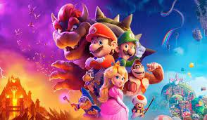
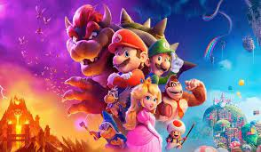

Séries e Filmes
 

Genero: Sitcom, comédia
Introdução: Jake Peralta é um
detetive brilhante e imaturo ao
mesmo tempo.
Genero: Sitcom, Ofice humor
Introdução: Funcionário de uma
gigantesca loja de
depaartamentos vivem divertidas
aventuras.
Genero: Animação, comédia
Introdução:Mario é um encanador junto com seu irmão Luigi. Um dia, eles vão parar no reino dos
cogumelos, governado pela Princesa Peach,
Genero: Animação, comédia
Introdução: Po é um panda que trabalha na loja de macarrão da sua família e sonha em transformar-se
em um mestre de kung fu.